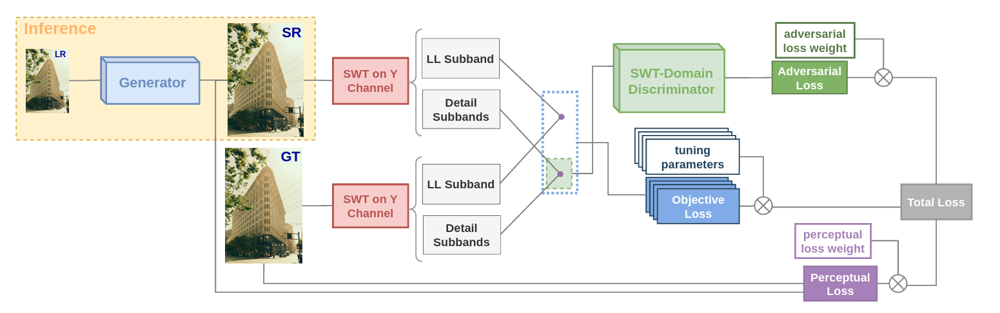

Training Generative Image Super-Resolution Models by Wavelet-Domain Losses Enables Better Control of Artifacts
Authors: Cansu Korkmaz, A. Murat Tekalp, Zafer Dogan
Venue: Proceedings of the IEEE/CVF Conference on Computer Vision and Pattern Recognition (CVPR), 2024
Pages: 5926-5936
Overview
Super-resolution (SR) is an ill-posed inverse problem where the size of the set of feasible solutions that are consistent with a given low-resolution image is very large. Many algorithms have been proposed to find a "good" solution among the feasible solutions that strike a balance between fidelity and perceptual quality. Unfortunately all known methods generate artifacts and hallucinations while trying to reconstruct high-frequency (HF) image details. A fundamental question is: Can a model learn to distinguish genuine image details from artifacts? Although some recent works focused on the differentiation of details and artifacts this is a very challenging problem and a satisfactory solution is yet to be found.
This paper shows that the characterization of genuine HF details versus artifacts can be better learned by training GAN-based SR models using wavelet-domain loss functions compared to RGB-domain or Fourier-space losses. Although wavelet-domain losses have been used in the literature before they have not been used in the context of the SR task. More specifically we train the discriminator only on the HF wavelet sub-bands instead of on RGB images and the generator is trained by a fidelity loss over wavelet subbands to make it sensitive to the scale and orientation of structures. Extensive experimental results demonstrate that our model achieves better perception-distortion trade-off according to multiple objective measures and visual evaluations.
Key Contributions
- Wavelet-domain loss functions for GAN-based super-resolution
- Discriminator trained on high-frequency wavelet sub-bands
- Better artifact control and perception-distortion trade-off
- Improved differentiation between genuine details and artifacts